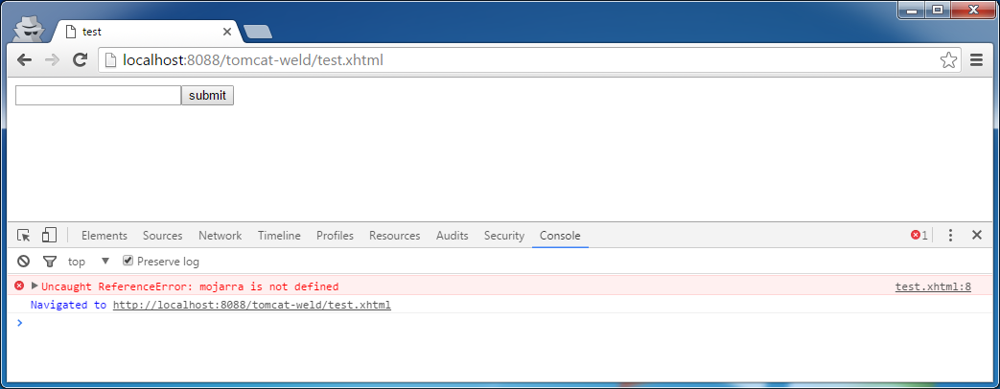
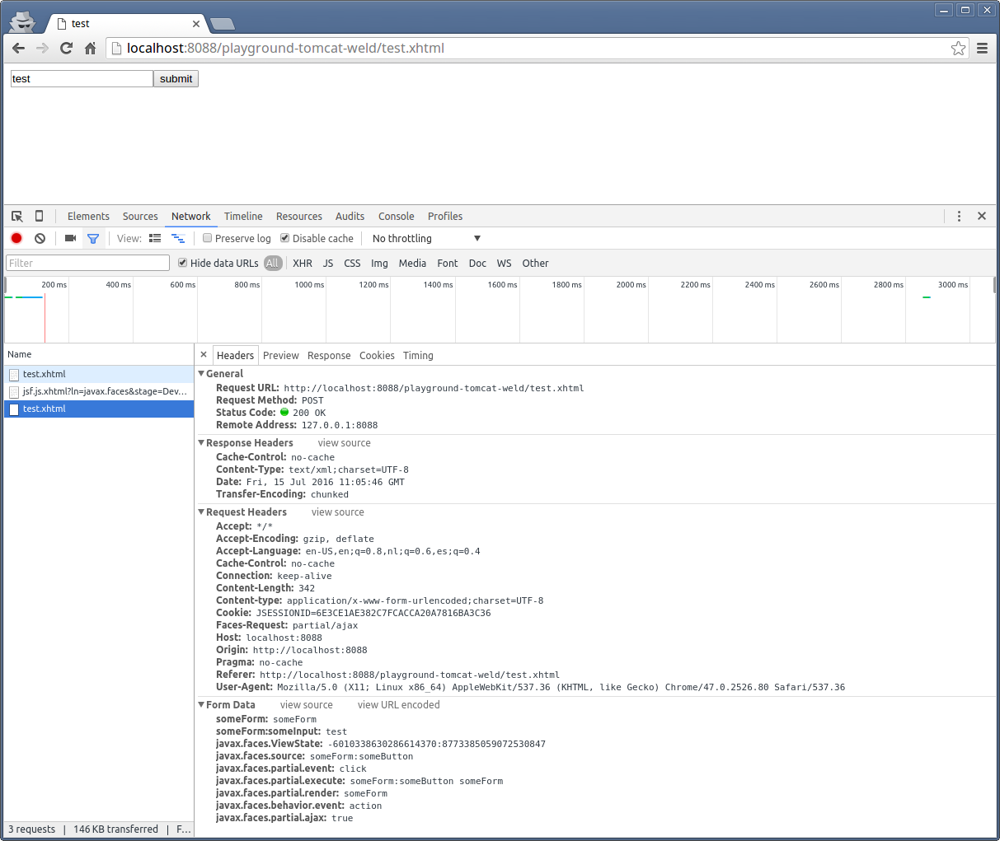

Sometimes, when using <h:commandLink>, <h:commandButton> or <f:ajax>,
the action, actionListener or listener method associated with the tag
are simply not being invoked. Or, the bean properties are not updated with
submitted UIInput values.
What are the possible causes and solutions for this?
Answer
Introduction
Whenever an UICommand component (<h:commandXxx>, <p:commandXxx>, etc)
fails to invoke the associated action method, or an UIInput component
(<h:inputXxx>, <p:inputXxxx>, etc) fails to process the submitted values
and/or update the model values, and you aren't seeing any googlable exceptions
and/or warnings in the server log, also not when you configure an ajax
exception handler as per Exception handling in JSF ajax requests, nor when you
set below context parameter in web.xml,
<context-param>
<param-name>javax.faces.PROJECT_STAGE</param-name>
<param-value>Development</param-value>
</context-param>
and you are also not seeing any googlable errors and/or warnings in browser's
JavaScript console (press F12 in Chrome/Firefox23+/IE9+ to open the web
developer toolset and then open the Console tab), then work through below
list of possible causes.
Possible causes
-
UICommand and UIInput components must be placed inside an UIForm component, e.g. <h:form> (and thus not plain HTML <form>), otherwise nothing can be sent to the server. UICommand components must also not have type="button" attribute, otherwise it will be a dead button which is only useful for JavaScript onclick. See also How to send form input values and invoke a method in JSF bean and does not initiate a postback.
-
You cannot nest multiple UIForm components in each other. This is illegal in HTML. The browser behavior is unspecified. Watch out with include files! You can use UIForm components in parallel, but they won't process each other during submit. You should also watch out with "God Form" antipattern; make sure that you don't unintentionally process/validate all other (invisible) inputs in the very same form (e.g. having a hidden dialog with required inputs in the very same form). See also How to use
-
No UIInput value validation/conversion error should have occurred. You can use <h:messages> to show any messages which are not shown by any input-specific <h:message> components. Don't forget to include the id of <h:messages> in the <f:ajax render>, if any, so that it will be updated as well on ajax requests. See also h:messages does not display messages when p:commandButton is pressed.
-
If UICommand or UIInput components are placed inside an iterating component like <h:dataTable>, <ui:repeat>, etc, then you need to ensure that exactly the same value of the iterating component is been preserved during the apply request values phase of the form submit request. JSF will reiterate over it to find the clicked link/button and submitted input values. Putting the bean in the view scope and/or making sure that you load the data model in @PostConstruct of the bean (and thus not in a getter method!) should fix it. See also How and when should I load the model from database for h:dataTable.
-
If UICommand or UIInput components are included by a dynamic source such as <ui:include src="#{bean.include}">, then you need to ensure that exactly the same #{bean.include} value is preserved during the view build time of the form submit request. JSF will reexecute it during building the component tree. Putting the bean in the view scope and/or making sure that you load the data model in @PostConstruct of the bean (and thus not in a getter method!) should fix it. See also How to ajax-refresh dynamic include content by navigation menu? (JSF SPA).
-
The rendered attribute of the component and all of its parents and the test attribute of any parent <c:if>/<c:when> should not evaluate to false during the apply request values phase of the form submit request. JSF will recheck it as part of safeguard against tampered/hacked requests. Storing the variables responsible for the condition in a @ViewScoped bean or making sure that you're properly preinitializing the condition in @PostConstruct of a @RequestScoped bean should fix it. The same applies to the disabled and readonly attributes of the component, which should not evaluate to true during apply request values phase. See also JSF CommandButton action not invoked, Form submit in conditionally rendered component is not processed, h:commandButton is not working once I wrap it in a and Force JSF to process, validate and update readonly/disabled input components anyway
-
The onclick attribute of the UICommand component and the onsubmit attribute of the UIForm component should not return false or cause a JavaScript error. There should in case of <h:commandLink> or <f:ajax> also be no JS errors visible in the browser's JS console. Usually googling the exact error message will already give you the answer. See also Manually adding / loading jQuery with PrimeFaces results in Uncaught TypeErrors.
-
If you're using Ajax via JSF 2.x <f:ajax> or e.g. PrimeFaces <p:commandXxx>, make sure that you have a <h:head> in the master template instead of the <head>. Otherwise JSF won't be able to auto-include the necessary JavaScript files which contains the Ajax functions. This would result in a JavaScript error like "mojarra is not defined" or "PrimeFaces is not defined" in browser's JS console. See also h:commandLink actionlistener is not invoked when used with f:ajax and ui:repeat.
-
If you're using Ajax, and the submitted values end up being null, then make sure that the UIInput and UICommand components of interest are covered by the <f:ajax execute> or e.g. <p:commandXxx process>, otherwise they won't be executed/processed. See also Submitted form values not updated in model when adding to and Understanding PrimeFaces process/update and JSF f:ajax execute/render attributes.
-
If the submitted values still end up being null, and you're using CDI to manage beans, then make sure that you import the scope annotation from the correct package, else CDI will default to @Dependent which effectively recreates the bean on every single evaluation of the EL expression. See also @SessionScoped bean looses scope and gets recreated all the time, fields become null and What is the default Managed Bean Scope in a JSF 2 application?
-
If a parent of the <h:form> with the UICommand button is beforehand been rendered/updated by an ajax request coming from another form in the same page, then the first action will always fail in JSF 2.2 or older. The second and subsequent actions will work. This is caused by a bug in view state handling which is reported as JSF spec issue 790 and currently fixed in JSF 2.3. For older JSF versions, you need to explicitly specify the ID of the <h:form> in the render of the <f:ajax>. See also h:commandButton/h:commandLink does not work on first click, works only on second click.
-
If the <h:form> has enctype="multipart/form-data" set in order to support file uploading, then you need to make sure that you're using at least JSF 2.2, or that the servlet filter who is responsible for parsing multipart/form-data requests is properly configured, otherwise the FacesServlet will end up getting no request parameters at all and thus not be able to apply the request values. How to configure such a filter depends on the file upload component being used. For Tomahawk <t:inputFileUpload>, check this answer and for PrimeFaces <p:fileUpload>, check this answer. Or, if you're actually not uploading a file at all, then remove the attribute altogether.
-
Make sure that the ActionEvent argument of actionListener is an javax.faces.event.ActionEvent and thus not java.awt.event.ActionEvent, which is what most IDEs suggest as 1st autocomplete option. Having no argument is wrong as well if you use actionListener="#{bean.method}". If you don't want an argument in your method, use actionListener="#{bean.method()}". Or perhaps you actually want to use action instead of actionListener. See also Differences between action and actionListener.
-
Make sure that no PhaseListener or any EventListener in the request-response chain has changed the JSF lifecycle to skip the invoke action phase by for example calling FacesContext#renderResponse() or FacesContext#responseComplete().
-
Make sure that no Filter or Servlet in the same request-response chain has blocked the request fo the FacesServlet somehow. For example, login/security filters such as Spring Security. Particularly in ajax requests that would by default end up with no UI feedback at all. See also Spring Security 4 and PrimeFaces 5 AJAX request handling.
-
If you are using a PrimeFaces <p:dialog> or a <p:overlayPanel>, then make sure that they have their own <h:form>. Because, these components are by default by JavaScript relocated to end of HTML <body>. So, if they were originally sitting inside a <form>, then they would now not anymore sit in a <form>. See also p:commandbutton action doesn't work inside p:dialog
-
Bug in the framework. For example, RichFaces has a "conversion error" when using a rich:calendar UI element with a defaultLabel attribute (or, in some cases, a rich:placeholder sub-element). This bug prevents the bean method from being invoked when no value is set for the calendar date. Tracing framework bugs can be accomplished by starting with a simple working example and building the page back up until the bug is discovered.
Debugging hints
In case you still stucks, it's time to debug. In the client side, press F12 in
webbrowser to open the web developer toolset. Click the Console tab so see
the JavaScript conosle. It should be free of any JavaScript errors. Below
screenshot is an example from Chrome which demonstrates the case of submitting
an <f:ajax> enabled button while not having <h:head> declared (as
described in point 7 above).

Click the Network tab to see the HTTP traffic monitor. Submit the form and
investigate if the request headers and form data and the response body are as
per expectations. Below screenshot is an example from Chrome which
demonstrates a successful ajax submit of a simple form with a single
<h:inputText> and a single <h:commandButton> with <f:ajax execute="@form"
render="@form">.

(warning: when you post screenshots from HTTP request headers like above from
a production environment, then make sure you scramble/obfuscate any session
cookies in the screenshot to avoid session hijacking attacks!)
In the server side, make sure that server is started in debug mode. Put a
debug breakpoint in a method of the JSF component of interest which you expect
to be called during processing the form submit. E.g. in case of UICommand
component, that would be UICommand#queueEvent() and in case of UIInput
component, that would be UIInput#validate(). Just step through the code
execution and inspect if the flow and variables are as per expectations. Below
screenshot is an example from Eclipse's debugger.

Suggest
If your h:commandLink is inside a h:dataTable there is another reason why
the h:commandLink might not work:
The underlying data-source which is bound to the h:dataTable must also be
available in the second JSF-Lifecycle that is triggered when the link is
clicked.
So if the underlying data-source is request scoped, the h:commandLink does
not work!